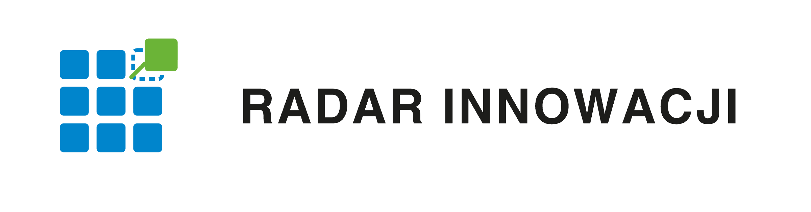
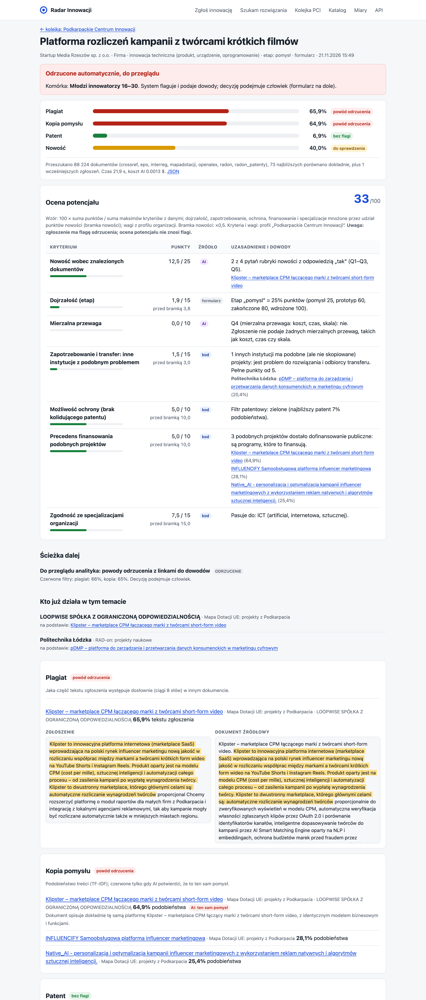
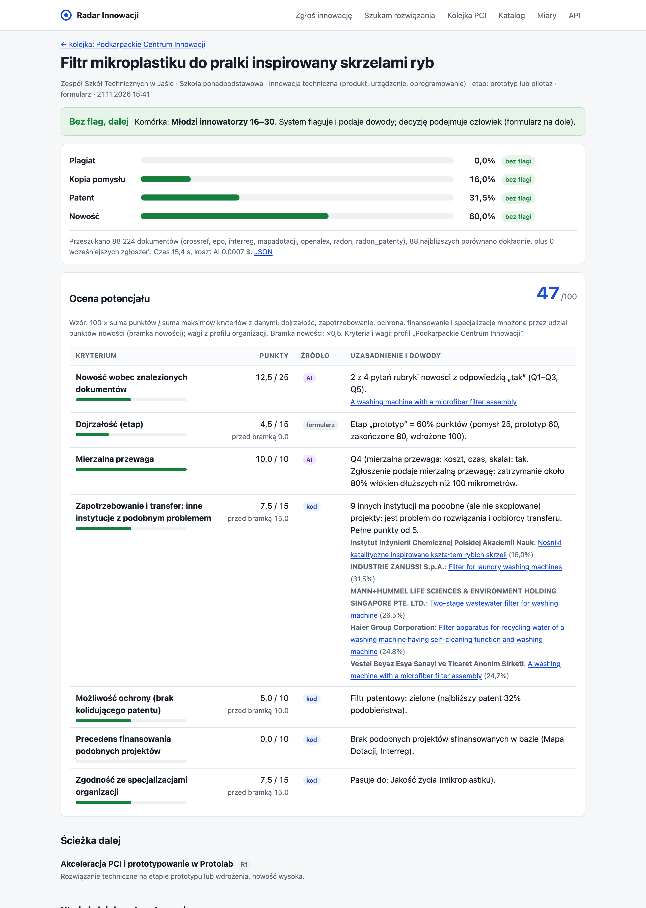
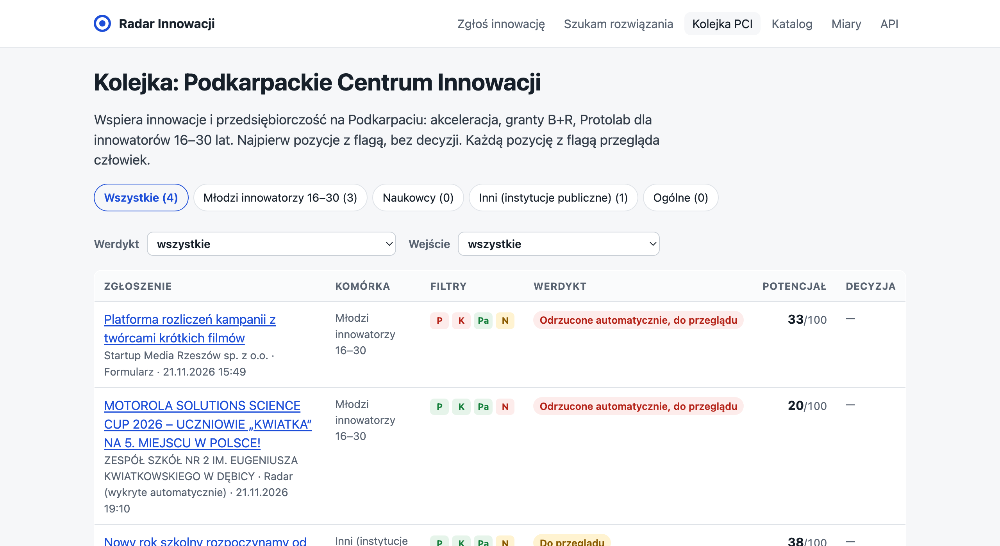

Dla firm i instytucji. Podkarpackie Centrum Innowacji jest pierwszym użytkownikiem: własna kolejka, komórki, ścieżki i wagi oceny.
HackNation 2026 · zadanie „Radar innowacji” · licencja EUPL-1.2
formularz · strona z linku · projekt z bazy · radar WWW: 172 strony szkół, uczelni i samorządów
88 tys. dokumentów: Mapa Dotacji, Interreg, RAD-on, patenty uczelni; EPO i publikacje na żądanie. Kod: BM25.
4 filtry odrzucenia: procent, pasmo, link do dowodu
7 kryteriów, jawny wzór, wagi z profilu organizacji
kolejka, decyzja z powodem, dziennik
Jedno sprawdzenie trwa 15–45 s i kosztuje około 0,001 $. System flaguje i uzasadnia, a każdą pozycję z flagą przegląda człowiek.
| Filtr | Co mierzy | Kto |
|---|---|---|
| Plagiat | część 8-wyrazowych ciągów występująca dosłownie gdzie indziej | kod |
| Kopia | podobieństwo treści TF-IDF; czerwone tylko gdy AI potwierdzi „ten sam pomysł” | kod + AI |
| Patent | patenty EP (udzielone i zgłoszenia) i 19 tys. patentów polskich uczelni; przypomnienie o 18 miesiącach | kod + AI |
| Nowość | 5 pytań rubryki; każda odpowiedź wskazuje dokument z wyników, kod to sprawdza | AI, kod sprawdza |
Wcześniejsza praca tej samej instytucji nie odrzuca: jest oznaczona jako kontynuacja.

Przepisany projekt z Mapy Dotacji: plagiat 65,9%, kopia 64,9% → odrzucone, do przeglądu.
Fragmenty obok siebie z podświetleniem, link do źródła i nazwa instytucji. Analityk od razu widzi, skąd jest flaga.

Wzór: 100 × Σ punktów / Σ maksimów kryteriów z danymi.
Bramka nowości: kryteria „kod” i dojrzałość mnożymy przez udział punktów nowości. Rutynowy zakup bywa dojrzały i sfinansowany, ale nie jest innowacją.
Wagi i specjalizacje są w profilu organizacji (PCI: lotnictwo i kosmos, motoryzacja, ICT, jakość życia). Przykład: filtr mikroplastiku ze szkoły w Jaśle → 47/100, ścieżka R1.

| Źródło | Dokumenty |
|---|---|
| Mapa Dotacji UE (Podkarpacie) | 20 069 |
| Interreg Polska–Słowacja | 258 |
| RAD-on: projekty naukowe | 48 817 |
| RAD-on: patenty polskich uczelni | 19 004 |
| EPO, OpenAlex, Crossref | na żądanie |
| Radar WWW: RSS 172 szkół, uczelni, PCI, samorządów | cyklicznie |
robots.txt i limit 1 zapytania na sekundę. Zabezpieczeń anty-botowych nie obchodzimy. Bez nazwisk z baz.
wyszukiwanie, plagiat, podobieństwo, reguły ścieżek, wzór potencjału, kolejka
tłumaczenie zapytania, potwierdzenie kopii, rubryka nowości, karta ze strony WWW
Kod odrzuca odpowiedź AI, która wskazuje dokument spoza wyników, i cytat, którego nie ma w tekście.
| Plagiat: połowa zdań z dwóch projektów | 9 z 9 |
| Kopia: projekt przepisany przez AI | 10 z 10 |
| Patent: opis patentu uczelni przepisany | 5 z 5 |
| Własna praca: kontynuacja, bez odrzucenia | 5 z 5 |
| Duplikat zgłoszenia | 3 z 3 |
Mediana czasu 44,3 s (4 sprawdzenia równolegle), średni koszt AI 0,00129 $.
Na 20 prawdziwych projektach z Mapy Dotacji rutynowe zakupy (wozy OSP, oczyszczalnie) dostawały 62–74 pkt potencjału, prawie tyle co projekty B+R.
Dodaliśmy bramkę nowości: rutyna 0–44 pkt, B+R do 65 pkt.
Zestaw mierzy czułość na przypadkach zbudowanych z danych, a nie odsetek fałszywych alarmów. Wspólne szablony opisów (np. OSP) dają flagę plagiatu do przeglądu.